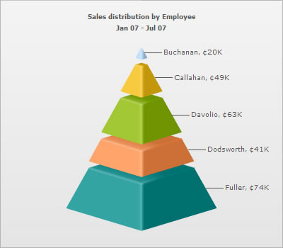

Special Characters > Using Cent sign |
|
| When using dataURL method |
| If you're using dataURL method, you can directly embed the Cent character in your XML and then use it as under: |
| <chart caption='Sales distribution by Employee' subCaption='Jan 07 - Jul 07' numberPrefix='¢' isSliced='1'> <set label='Buchanan' value='20000' /> <set label='Callahan' value='49000' /> <set label='Davolio' value='63000' /> <set label='Dodsworth' value='41000' /> <set label='Fuller' value='74000' /> </chart> |
| You'll now get the following output: |
|  |
| When using dataXML method |
| When using dataXML method, you need to encode Cent character to %A2 - else, you'll get an error on many browsers. Following is the full HTML Code to embed the chart: |
<div id="chart1div"> |
| You will get the same output as earlier. |